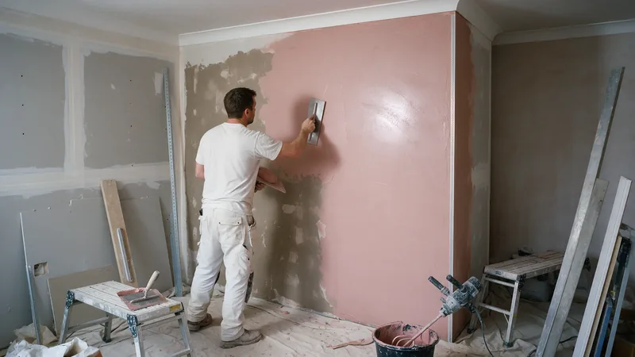
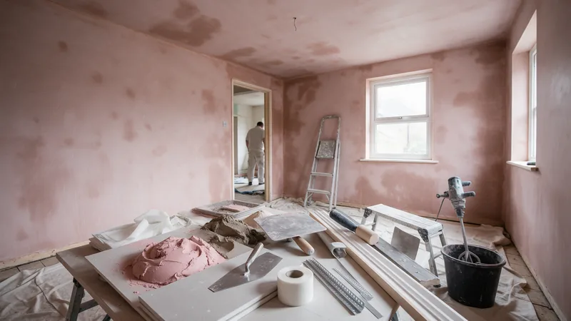
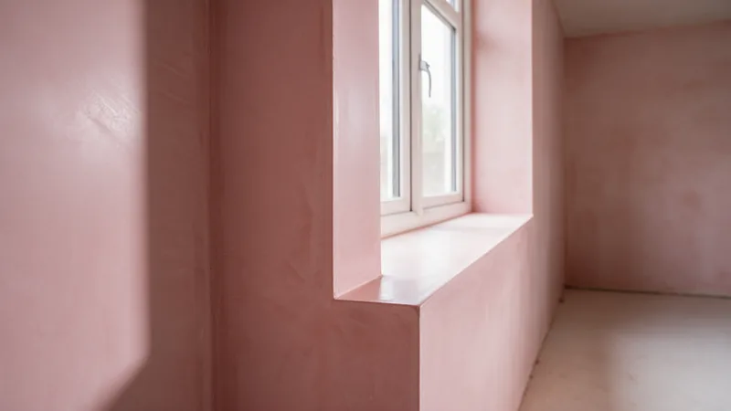
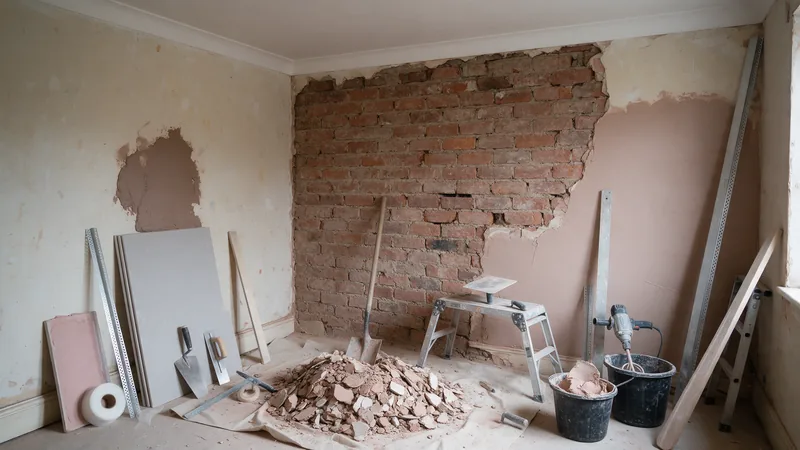
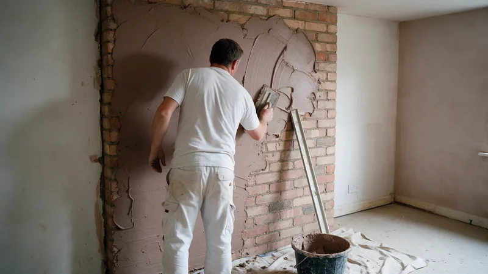
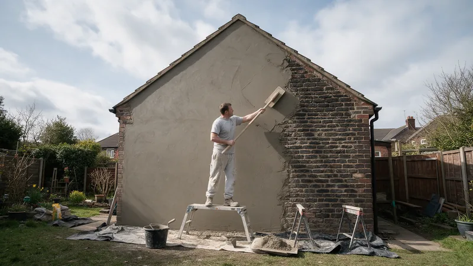

Our work
Twelve sample jobs.
Skimwell is a demo, so none of these happened. They are the twelve jobs a plastering firm round here would actually have on in a month, with pictures generated for this site rather than taken on a job.

Generated photoSecond pass going onAshton-under-Lyne Sample
Generated photoA room skimmed outHyde Sample
Generated photoThe corner and the revealStalybridge Sample
Generated photoBack to the brickMossley Sample
Generated photoUndercoat on bare brickDenton Sample Generated photoBeads plumbed, then plasteredAshton-under-Lyne Sample
Generated photoBeads plumbed, then plasteredAshton-under-Lyne Sample
Generated photoFloating a gableStalybridge Sample Generated photoSilicone thin coat, finishedHyde Sample
Generated photoSilicone thin coat, finishedHyde Sample Generated photoPebbledash letting goDenton Sample
Generated photoPebbledash letting goDenton Sample Generated photoAfter a leak upstairsMossley Sample
Generated photoAfter a leak upstairsMossley Sample Generated photoReboarded overheadAshton-under-Lyne Sample
Generated photoReboarded overheadAshton-under-Lyne Sample Generated photoCornice, before the repairStalybridge Sample
Generated photoCornice, before the repairStalybridge SampleFilter them, or tap one for the detail. Every one is a made up sample.
What you are looking at
Why a real firm should show the bad wall.
Every plasterer shows the same photograph: a pink room, four flat walls, taken on a phone at the end of the last day. They all look identical, and none of them tells you whether the firm can work out what your walls need.
The pictures worth showing are the ones from the middle of the job. The wall stripped back with the blown area outlined in chalk. The straight edge against a bow with daylight behind it. The undercoat ruled flat before anybody has seen a finish coat. The brown ring on a ceiling before and the reboarded ceiling after. On a real site this page would be your own phone photographs of exactly that, with a line each about what it turned out to be. That is the page that wins the job off the firm who only photographs the pink.
Generated for this demo.
Want somebody to look at yours?
Tell us which rooms and your postcode and we will come and tap the walls.